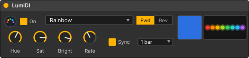

Turn Ableton Live into an LED light show. LumiDI is an open-source Max for Live
device that streams pixel animations as MIDI notes to a Teensy-driven WS2812B
strip — tempo-synced, automatable, and hackable.
No DMX, no Art-Net, no serial protocol to invent — just MIDI notes. The LumiDI
device runs an animation engine inside Live and streams complete pixel frames
(~30 fps) out the track's MIDI output. A Teensy 4.0 running the open firmware
shows up as a class-compliant USB-MIDI port, decodes the notes, and drives the
strip. Because it's plain MIDI, everything is automatable, tempo-syncable, and
recordable like any other instrument.
Ableton LiveLumiDI Max for Live device
→
MIDI notespixel frames, ~30 fps
→
Teensy 4.0USB-MIDI firmware
→
WS2812B stripthe light show
…or route the same notes to an IAC bus and preview in the
browser simulator — no hardware needed.
The Ableton device
A Max for Live MIDI effect with 15 animations — Solid, Pulse, Chase, Rainbow,
Strobe, Scanner, Breathe, Wipe, Theater, Burst, Hue Drift, Sparkle, Fire, Flip,
and Wave. HSV color dials, a direction switch, free-run rate, and beat sync that
locks the animation cycle to Live's transport (e.g. exactly one bar). Every
parameter is automatable.

The LumiDI device — animation menu, HSV color, rate and beat-sync, live color swatch, LED preview.
Using it
Download LumiDI.amxd (or build it from source with python3 ableton/build_amxd.py).
Drag it onto a MIDI track in Live.
Set the track's MIDI To to the Teensy's MIDI port — or to an IAC bus to preview in the simulator.
Set the track's MIDI From to "No Input". This matters: on "All Ins" the track hears its own output, trips Live's feedback protection, and knob changes get silently swallowed.
Press play. Animations follow Live's transport — with Sync on (the default) the cycle locks to your tempo; turn it off to free-run at the Rate dial's speed.
The hardware is a Teensy 4.0 and a strip of WS2812Bs plus two passive components.
Firmware, the device, and this page all live in
the repo.
Parts
Part
Notes
Teensy 4.0
The USB-MIDI brain. Appears to your computer as a class-compliant MIDI device.
WS2812B LED strip, 5 V
e.g. AL-WS2812B-150BK-WP (30 px/m, 5050 RGB). The firmware defaults to 19 pixels; the MIDI protocol addresses up to 42.
330 Ω resistor
In series on the data line, between the Teensy and the strip's DIN.
100–1000 µF capacitor
6.3 V or higher, across the strip's +5V and GND, close to the strip.
5 V power supply
Budget 60 mA per pixel: 19 px ≈ 1.14 A at full white, so ≥ 1.5 A. Power the strip from the PSU, not the Teensy.
Micro-USB cable
Powers the Teensy and carries the MIDI.
Circuit
Data from Teensy pin 7 through the 330 Ω resistor to DIN; strip powered by the PSU; all grounds common.
Firmware
The firmware is a PlatformIO project using FastLED:
git clone https://github.com/chris-albert/lumidi.git
cd lumidi/hardware/teensy
# set NUM_LEDS in src/main.cpp to your strip length
pio run -t upload
Once flashed, the Teensy enumerates as a USB-MIDI port — point Live's MIDI To at it and you're done.
The MIDI protocol
The firmware is deliberately dumb — anything that can send MIDI notes can drive
the strip. The Max for Live device is just one client; your sequencer, script,
or microcontroller can be another.
notes 0–125stage one color channel: pixel = note ÷ 3, channel = note mod 3 (R, G, B)velocity vchannel value = v × 2 — except velocity 1 writes 0 (velocity 0 is a note-off and is ignored)note 127"show" — latch the staged frame to the LEDs
Pixel writes only stage; nothing changes on the strip until note 127 arrives, so
a frame always appears atomically.
No hardware? Simulate it
The strip simulator renders the same MIDI stream in the
browser — pick a MIDI input, point Live's MIDI To at an IAC bus
(macOS: enable the IAC Driver in Audio MIDI Setup), and watch the strip.
It needs Chrome for Web MIDI, logs every decoded pixel write, and shows the
latched frame rate — handy for debugging your own protocol clients too.